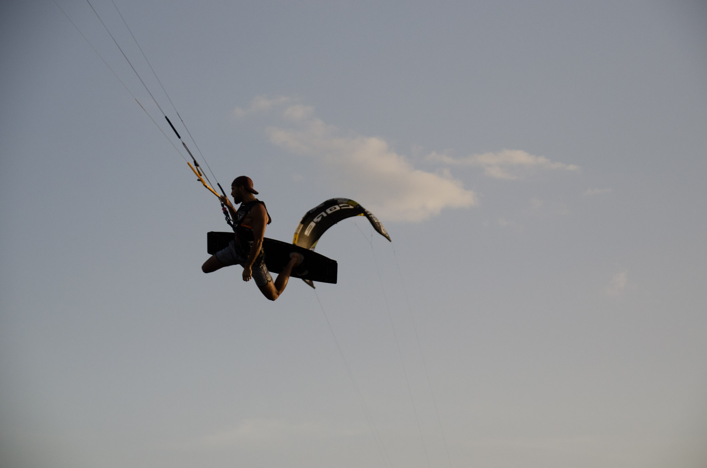

|

me in cabodelavela |
Kitesurfing is a wind powered surface watersport using a kite and a board to move across the water. Kitesurfing harnesses the power of the wind through a large parachute type kite to propel a rider across the water on a small surfboard or a kiteboard (similar to a wakeboard). |
|---|
Although the name includes surfing, kitesurfing does not need waves, the wind is the only force needed to power you along. Flat water locations such as Camber are favoured by riders looking to perform freestyle as the water is smooth so easier to take off and land on. With the large range of conditions to ride in, whether ‘surfing’ in the waves, going for big jumps, taking out a GPS for a speed records, learning a new freestyle trick or on a long distance adventure kitesurfing never becomes boring or repetitive. Kites with inflatable tubes are used to produce the pull from the wind. The inflatable parts of the kites help hold the shape and also allow the kite to float and therefore be re-launched from the water. Since 2006 there has been a massive change in the design of kitesurfing kites, pre 2006 there was just one type of kite, the C-kite. C kites are named due to their very curved shape forming a letter C. In 2006 bow or SLE (supported leading edge) kites were introduced into the market, bow kites are named due to their flatter shape similar to an archers bow, SLE kites are named due to the bridle lines that attach to the inflatable leading edge and support its shape. Bow and SLE kites also have swept back wingtips which when combined with the flatter shape and bridle give the kite massive depower, very easy water re-launch and overall great improvement in safety and ease of use. Since the bow and SLE kites, many aspects of their design have been added to C kites and now hybrid kites are also on the market which incorporate aspects of both kite designs. Most kite manufacturers now use each kite design in their product range, often a bow/SLE as the entry level/intermediate kite, a bow/SLE as the free-ride, all round kite and a C as the performance kite. C kites are still used by experienced riders due to their quick reactive turning, direct response and powerful turns however they have harder water re-launch and less depower than Bow /SLE kites. The boards used are predominately symmetrical being the same whichever direction you are travelling in, similar to a wake board, these are called twin tips. Directional boards similar to surf boards are also used when riding waves. The larger the surface area of a board the less power is needed to get it up and planning on the water, larger boards are therefore used by beginners so they do not need so much power in the kite keeping it safer and also in light winds when less power is available in the kite. Smaller boards are used as you progress although due to the large depower on newer kites and the wakeboarding style of tricks, tiny boards are no longer used. Most kitesurfers use boards ranging from 125-150cm in length and 38-45cm in width. Due to the equipment available kitesurfing can be used in a massive range of winds – far more than windsurfing as the size of the kite is far larger than a windsurf sail so will start to produce power in lighter winds. As the strength of the wind increases smaller and smaller kites are used until you are out there in the storm with the windsurfers. Being a new sport kitesurfing takes its ideas from a whole range of other sports, wakeboarding and powerkiting being the main influences but other sports such as snowboarding, windsurfing, surfing and paragliding also contribute and the tricks reflect this with a lot of crossover and therefore practice and continuation from one sport to the other. Having this crossover allows participants to pick up kitesurfing quickly and also improve their other sport(s). If you’ve never done any other of the similar sports do not fear as although kitesurfing may look hard and complicated it is probably the easiest water sport to learn and has a very quick progression curve with many people being up and riding after just a three day kitesurfing course Kitesurfing has a lot of benefits health wise as you use your whole body, your legs are used to control the board and push against the power of the kite whereas your torso, especially your abs and arms are used to hold onto the kite and keep your balance. A harness is used once you get into the water which takes all the power of the kite allowing anyone to learn and have fun for hours on end without becoming tired. Another advantage for kitesurfing over many other water sport is the ease of transport of the equipment, even the largest kites pack up to fit in a rucksack and the boards are also relatively short ranging from around 120 to 150cm in length, so there is no need to invest in a van to fit all your new kit in. The overall cost of the sport is relatively cheap as well, as once you have bought the euipment there is nothing left to pay for……the wind is free!!